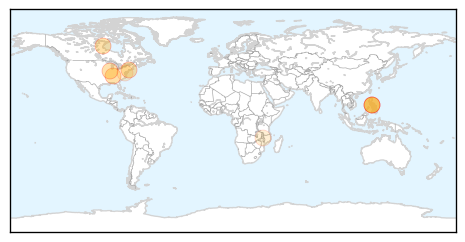

30 Day Trends
Web: 2 alerts, 0 warnings
Twitter: 0 alerts, 0 warnings
Top Articles:
- 1.000
- Are We At The Dawn Of The Age of Epidemics?
- 0.987
- Measles Protection Important for All Who Travel Outside the United States
- 0.975
- Doctors Warn of Measles Outbreak in U.S.
- 0.967
- Measles has been reported in nearby Redding.
- 0.901
- WFMJ.com News weather sports for Youngstown-Warren Ohio
- 0.888
- Potential measles exposure in Fairfax, Loudoun counties between April 23 and May 1
- 0.863
- Case of measles joins mumps outbreak in Delaware County
- 0.533
- Measles exposure possible in Virginia, Maryland, D.C. (Map)
- 0.509
- Unintended victims of Gates Foundation generosity
Top Tweets:
-
No tweets found for May 07, 2014
Web/News Articles

Tweets

Article Locations
Article Confidences